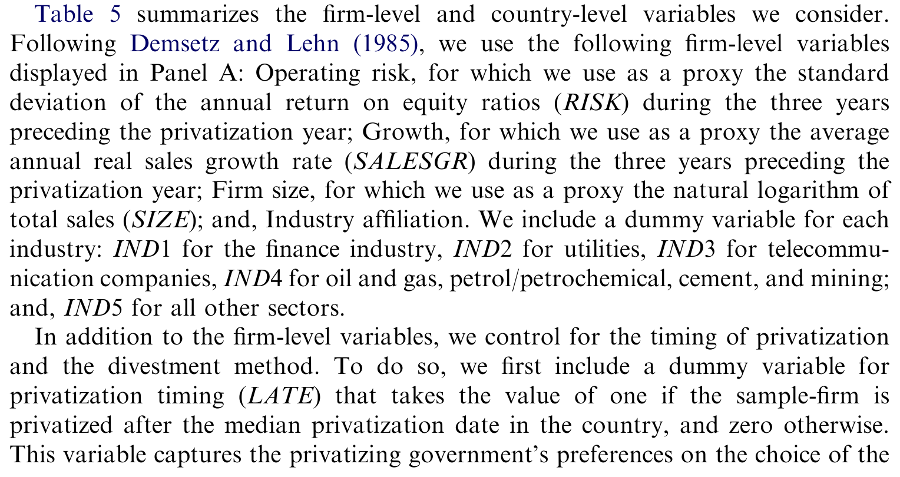
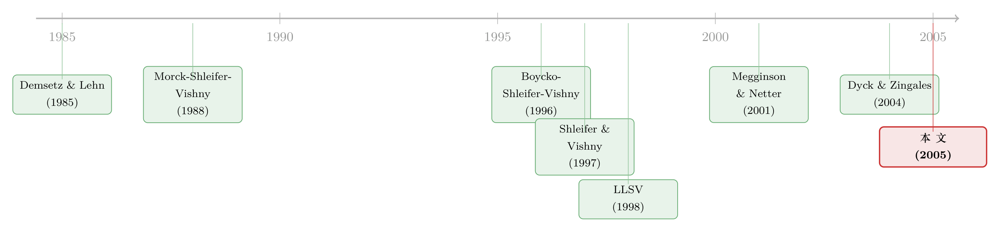

国家不护短的地方，大股东自己当「保镖」
本文读的是 Boubakri, Cosset & Guedhami (2005, Journal of Financial Economics)：用 39 个国家、209 家私有化企业从 1980 到 2001 年的样本，作者发现私有化之后政府逐步交出控制权、私人股权随时间越攥越紧；而真正点睛的一笔是——所有权集中度对业绩的提升作用，在投资者保护越弱的国家越大。换句话说，当国家的法律「不护短」时，大股东会自己站出来当「保镖」。
1 一桩现成的「自然实验」
公司治理这门学问，归根结底是在回答一个老问题：当所有权和控制权分开之后，怎么让管钱的人替出钱的人卖力？这就是经典的 委托—代理问题 (principal-agent problem)。教科书里通常拿一家股权分散的上市公司来讲，可现实里所有权结构是慢慢长出来的，盘根错节，你很难说清楚「是好的治理招来了好的股东，还是好的股东带来了好的治理」。内生性像一团雾，罩在所有横截面回归之上。
但有一类事件，可以把这团雾吹散——私有化 (privatization)。
国家把一家国有企业卖出去，往往是一个 离散的、突如其来的 (discrete) 事件，它在很短的时间里把所有权结构整个掀翻一遍：昨天还是政府独大，今天股权就散落到机构、个人、外资手里。Denis 和 McConnell (2003) 说得好，私有化是一个观察公司治理机制如何「演化、互动、并影响业绩」的天然实验。本文三位作者正是抓住了这个实验。
为什么是私有化、而不是普通的 IPO？因为卖方是政府。政府卖股权时的考量（财政、政治、就业、credibility）和私人老板截然不同，这让私有化的样本天然带着「外生冲击」的味道——所有权的变动不是企业自己挑出来的，而是被一场政策推着走的。
作者要回答四个递进的问题：(1) 私有化之后形成了怎样的所有权结构，它后来又怎么演化？(2) 投资者保护的强弱，会不会影响这个结构？(3) 这个结构还受哪些因素左右？(4) 所有权结构和投资者保护，最终怎样和企业业绩挂上钩？
这四问看似分散，其实串在 同一根线 上。这根线，就是本文真正想讲透的那个核心。
2 一个核心：集中度，是弱保护的「替代品」
先把这根线挑明。
Shleifer 和 Vishny (1997) 在那篇著名的公司治理综述里提出一个理论判断：在投资者保护薄弱的国家，集中的所有权本身就是一种有效的治理机制。逻辑很朴素——当法律不足以阻止管理层「掏空」公司时，谁来盯着管理层？只有那些身家性命都押在公司里的大股东。他们的财富对业绩高度敏感，于是有最强的动机去监督、去防止资源被侵占。法律这个 外部治理机制 (external governance mechanism) 一旦失灵，所有权集中这个 内部治理机制 (internal governance mechanism) 就会顶上来补位。
这是一个「替代」(substitution) 的故事：外部弱，内部就强；制度的真空，由股权的集中来填。
这正是全文反复打磨的那一个命题。后面所有的描述统计、所有的回归，最终都是为了给这句话提供证据：所有权集中度对业绩的正向作用，在弱保护国家里更明显。 读这篇论文，盯住这一条，就抓住了它的魂。
接着，一个自然的问题是：要检验一个关于「制度差异」的命题，你必须有制度差异。一国的数据做不到——美国的法律环境是恒定的。于是作者做了一个在当时颇为大胆的选择：跨国。
3 识别策略与数据
3.1 样本
作者收集了 209 家私有化企业，来自 25 个 新兴市场 (emerging markets) 和 14 个工业化国家，合计 39 个国家，时间跨度 1980 到 2001 年。数据主要来自世界银行的私有化数据库和 Megginson (2003) 持续更新的私有化企业名录。他们刻意剔除了前社会主义转型国家——因为那里的法律脱胎于苏联法、且私有化后股权大多落在内部人（管理层和员工）手里，会污染识别。
这个样本最值钱的地方，是它横跨 法律渊源 (legal origin)：35% 的企业来自普通法 (common law) 国家（73 家），65% 来自民法 (civil law) 国家（136 家）。按 La Porta, López-de-Silanes, Shleifer & Vishny (1998，下称 LLSV) 的经典划分，普通法国家投资者保护更强、民法国家更弱。这条「法系裂缝」，就是本文识别投资者保护效应的 外生变异 来源。地理上也足够分散：非洲与中东 21%、拉美 27%、东亚与南亚及太平洋 26%、欧洲与中亚 26%。
私有化方式上，72% 通过 公开发行 (share issue privatization, SIP) 完成，28% 通过 私下出售 (private sale)。89% 的交易是二次发行（资金不流入企业），作者为稳健起见把涉及一次发行的样本从分析中剔除，结果不变。
3.2 怎么度量「集中度」
作者沿用 Demsetz 和 Lehn (1985) 以及 LLSV (1998) 的两个口径来刻画 私人所有权集中度：前三大私人股东持股之和 L3，以及它的 赫芬达尔指数 (Herfindahl index) 近似 H3（前三大私人股东持股的平方和）。
但 L3 是个被框在 0 到 1 之间的有界变量，直接拿来做 OLS 因变量并不合适。仿照 Demsetz-Lehn (1985) 和 Himmelberg, Hubbard & Palia (1999)，作者做了一个 logistic 变换 把它「松绑」成无界变量，并对 H3 取对数：
$$ LL3 = \log\!\left(\frac{L3}{1-L3}\right), \qquad LH3 = \log\!\left(H3\right) $$
这一步有两层用意：其一，保证拟合值不会跑出 [0,1] 这个允许的取值范围；其二，改善残差的正态性，让标准的计量方法站得住脚。全文主用 LL3，并用 LH3 做稳健性检验。本文不构造任何结构模型——它是一篇彻头彻尾的实证论文，识别全靠跨国法系差异加面板设定，所以这里没有贝尔曼方程可推，反倒是这个朴素的变换值得停一停。
3.3 业绩与时间窗
业绩用三把尺子量：销售回报率 (ROS，净利/销售)、资产回报率 (ROA，净利/资产)、净资产回报率 (ROE，净利/权益)，这套口径承袭自 Megginson, Nash & van Randenborgh (1994) 与 Boubakri 和 Cosset (1998)。所有权和业绩数据都围绕私有化年取 -1 到 +3 共五年的窗口，主要来源是招股说明书和年报。
下面这张表把作者纳入回归的公司层面与国家层面变量罗列得清清楚楚，是理解后续「集中度由什么决定」的钥匙。

Table 5: summarizes the firm-level and country-level variables we consider
4 主要结果：政府退场，股权收紧，保护越弱越靠它
4.1 政府交权，私人接盘
第一个事实，关于 集中度的演化。前三大私人股东的平均持股 L3 从私有化前一年的 10.29% 跳到私有化当年的 33.15%，三年后继续爬到 40.94%。赫芬达尔指数 H3 从 3.11% 一路升到 19.42%。结论很干脆：私有化之后，私人股权随时间越来越集中。
第二个事实，关于 谁在接盘。政府的平均持股从私有化前的 77.01% 断崖式跌到当年的 35.78%，三年后只剩 21.85%——一次性蒸发了约 41 个百分点。更直观的是控股权：私有化前政府在 81.8% 的样本企业里是绝对控股股东（持股过半），这个比例在私有化当年掉到 37.1%，三年后只剩 22.1%。那些三年后仍被政府攥着的，主要来自公用事业、电信、航空、银行等战略部门，以及东亚和太平洋地区（那里部分私有化更常见，可参见 Gupta (2005) 对印度的研究）。
政府让出的份额去哪了？按吸收顺序：本地机构 (local institutions) 拿走最多（平均持股 6.1%→30.2%），其次是个人（4.2%→17.1%）和外资（7.07%→16.16%）。一个有意思的细节：作者发现 外资 (foreign investors) 里约 60% 是机构，这折射出某些发展中国家（尤其拉美）在金融自由化之后涌入的外资财团浪潮。员工持股则在 ESOP 安排下从 1.3% 微升到 3.9%，之后略有回落。
关于外资在跨国持股里到底是「蝗虫」还是长期建设者，可参见《外资真是「蝗虫」吗？——一次跨 30 国的长期投资体检》；本文给出的是另一面——私有化恰恰是外资集中进场的一个重要入口。
4.2 法系裂缝：民法国家股权攥得更紧
然后，真正关键的一步来了：把样本按法系劈成两半。
在私有化当年，前三大股东的平均持股，民法国家是 37.88%，普通法国家只有 23.59%；三年后，民法国家升到 47.20%，普通法国家是 29.99%。这组差异在 1% 水平上统计显著。也就是说，投资者保护越弱的国家，私有化后股权越集中。
这和 Dyck 和 Zingales (2004) 的发现严丝合缝——他们证明在控制权私利更大（法律保护更弱）的国家，私有化更可能通过私下出售完成、股权也更集中。本文的证据正好接上：弱保护国家的高集中度，很大程度上是因为那里的私有化主要走 私下出售 这条路。回归也确认：私下出售的确导致更集中的所有权，此外公司规模、销售增长、行业归属、以及社会政治稳定性都显著解释了集中度的横截面差异。
4.3 反转：集中度的「疗效」，因地制宜
最后落到那根线上。
作者直接检验 Shleifer-Vishny (1997) 的命题，结果是：所有权集中度与私有化后的企业业绩 显著正相关；而这个正向效应，在投资者保护低的国家更强、在保护高的国家更弱。这就是「替代」故事的实证落点——法律靠不住的地方，大股东的监督最值钱；法律足够好的地方，多一分集中度的边际治理价值反而有限。此外，作者还顺手发现：当员工参与持股时，业绩更高。
至此，全文的核心被钉死了：所有权集中不是放之四海皆好的灵丹，它的价值 取决于制度土壤。这一点，和「制度如何给股权定价」的大主题一脉相承（可参见《同一张交易台，44 个国家的「制度税」》）。
5 文献脉络
这篇论文站在三条河流的交汇处。
第一条是 所有权结构与业绩 的实证传统：Demsetz 和 Lehn (1985) 论证所有权结构本身是内生的、由企业特征决定；Morck, Shleifer 和 Vishny (1988) 给出管理层持股与公司价值之间的非单调关系。本文的 L3、H3 度量和 logistic 变换，技术上都直接继承自这一支。
第二条是 法与金融 (law and finance)：LLSV (1998) 和 La Porta et al. (2000) 把「投资者保护」量化成可比的跨国指标，奠定了「法系决定治理」的范式；Shleifer 和 Vishny (1997) 则在综述里抛出那个等待检验的理论命题——集中度替代弱保护。本文要做的，正是给这个命题第一次上一个跨国的实证检验。
第三条是 私有化 文献：Boycko, Shleifer 和 Vishny (1996) 的私有化理论、Boubakri 和 Cosset (1998) 与 D'Souza 和 Megginson (1999) 对私有化前后业绩的度量、Megginson 和 Netter (2001) 的综述、以及 Dyck 和 Zingales (2004) 关于控制权私利与私有化方式的研究，共同搭起了背景。本文的贡献是把「私有化后所有权结构如何演化、又由什么决定」这件事，第一次用多国样本系统地追踪了下来。

放在这张时间线上看，本文的位置很清楚：它是 法与金融 范式 和 私有化 实证 的一次联姻，把 Shleifer-Vishny 那句悬而未决的理论判断，落到了 39 国的真实数据上。
评论与延伸（Q&A + 研究方向）
(a) 几个可能的疑问
Q：私有化真的算「自然实验」吗，政府卖哪家、怎么卖难道不是挑出来的？
这正是本文最大的软肋。作者自己也承认存在 选择效应 (selection effects)，并在回归里专门加以控制，还把私有化方式（SIP vs 私下出售）当作解释变量纳入。但「卖哪家、何时卖、卖给谁」终究由政府的政治财政考量决定，并非完全外生。所以严格说，这是一个「准自然实验」，识别靠的是跨法系的制度差异，而非随机分配。
Q：用普通法/民法当投资者保护的代理变量，会不会太粗？
会有担心。法系是个很钝的二分，它把投资者保护、执法质量、甚至文化和发展水平全打包在一起，难以剥离。LLSV 体系本身近年也受到批评。本文的好处是法系外生性强、不易被企业操纵；代价是你没法说清「到底是法律条文、还是执法、还是别的什么」在起作用。
Q：集中度和业绩正相关，会不会只是「好企业本来就吸引大股东」的反向因果？
这是所有权—业绩文献的老大难。本文用私有化这个冲击和面板设定缓解了一部分，但并没有一个干净的工具变量来彻底斩断反向因果。Demsetz-Lehn (1985) 早就指出所有权是内生的，所以「集中度→业绩」的因果方向，本文给的是有力的相关证据，而非铁证。
Q：为什么政府退得这么彻底，三年就从 77% 降到 22%？
注意这是 部分、分阶段出售 (partial, staggered sales) 的累积结果，符合 Perotti (1995) 的「可信私有化」逻辑——政府逐步退出以建立 credibility。而且那些留在政府手里的多是战略部门和东亚的部分私有化案例，所以「彻底」其实是平均数掩盖了结构性差异。
Q：外资进来到底是好事还是坏事？
本文偏正面：外资（尤其外资机构，占约 60%）要求高信息披露、出于声誉考虑严格监督管理层（Dyck, 2001）。但本文没有单独识别外资持股对业绩的因果效应，只报告了「员工持股与业绩正相关」。外资的净效应在本文里其实是开放问题。
Q：这套结论能外推到今天的中国或别的转型经济体吗？
要小心。作者明确把前社会主义转型国家排除在样本之外，理由是那里股权大多落在内部人手里、法律脱胎于苏联法。所以本文的结论严格讲只覆盖「非转型」的新兴市场和工业化国家，对中国式的渐进私有化未必适用。
(b) 几个可能的研究问题与提案
1. 外资持有人与私有化债的流动性
【经济故事】本文记录了外资在私有化后大量进场（且六成是机构）。一个自然的延伸：这些外资机构进入后，企业发行的公司债二级市场流动性是否改善？机制可能是外资要求更高披露、降低信息不对称。 【可行性】中。需要把私有化企业名录与 TRACE/国际债券成交数据匹配，识别可用「资本账户开放」或「可投资度 (investability) 调整」作为外资进入的外生冲击，难点在新兴市场债券成交数据稀疏。
2. 集中度—保护的「替代」是否对称地体现在信用利差上
【经济故事】既然弱保护国家的集中度更能提升 股权 业绩，那它对 债权人 是福是祸？大股东可能既监督管理层（利好债主），也可能侵占（利空债主）。在弱保护国家，债的定价会怎么反映集中度？ 【可行性】中。需要私有化企业的债券利差数据加国家投资者保护指标，识别可沿用本文的法系分组做交互项。doable，但样本可能偏小。
3. 用更细的执法指标替换法系二分
【经济故事】本文的钝刀（法系）能不能换成更锋利的刀——比如执法质量、信息披露指数、反董事权利指数的逐年变化？看「集中度的疗效」到底对哪一维制度最敏感。 【可行性】高。LLSV 后续文献和世界银行已有大量可比指标，直接在本文框架里替换交互项即可，是一个低成本、高确定性的复制—扩展。
4. 私有化方式的内生选择与后续流动性
【经济故事】私下出售→更集中→可能更低的二级市场流动性；公开发行→更分散→更好的流动性。把「私有化方式」当作流动性的决定因素，能不能解释这些企业上市后长期的换手与价差差异？ 【可行性】中低。需要长期的股票流动性面板，且私有化方式本身内生（Megginson et al., 2004 已指出受法律环境影响），识别需要额外的工具或断点，doable 但不轻松。
参考文献
- Boubakri, N., Cosset, J.-C., 1998. The financial and operating performance of newly privatized firms: evidence from developing countries. Journal of Finance 53, 1081–1110.
- Boubakri, N., Cosset, J.-C., Guedhami, O., 2005. Postprivatization corporate governance: the role of ownership structure and investor protection. Journal of Financial Economics 76, 369–399.
- Boycko, M., Shleifer, A., Vishny, R., 1996. A theory of privatization. The Economic Journal 106, 309–319.
- Demsetz, H., Lehn, K., 1985. The structure of corporate ownership: causes and consequences. Journal of Political Economy 93, 1155–1177.
- Denis, D.K., McConnell, J.J., 2003. International corporate governance. Journal of Financial and Quantitative Analysis 38, 1–36.
- Dyck, A., Zingales, L., 2004. Private benefits of control: an international comparison. Journal of Finance 59, 537–600.
- Gupta, N., 2005. Partial privatization and firm performance. Journal of Finance (forthcoming).
- Himmelberg, C.P., Hubbard, G., Palia, D., 1999. Understanding the determinants of managerial ownership and the link between ownership and performance. Journal of Financial Economics 53, 353–384.
- La Porta, R., López-de-Silanes, F., Shleifer, A., Vishny, R., 1998. Law and finance. Journal of Political Economy 106, 1113–1150.
- La Porta, R., López-de-Silanes, F., Shleifer, A., Vishny, R., 2000. Investor protection and corporate governance. Journal of Financial Economics 58, 3–27.
- Megginson, W., Nash, R., van Randenborgh, M., 1994. The financial and operating performance of newly privatized firms: an international empirical analysis. Journal of Finance 49, 403–452.
- Megginson, W., Netter, J.N., 2001. From state to market: a survey of empirical studies on privatization. Journal of Economic Literature 39, 321–389.
- Morck, R., Shleifer, A., Vishny, R., 1988. Management ownership and corporate performance: an empirical analysis. Journal of Financial Economics 20, 293–315.
- Perotti, E., 1995. Credible privatization. American Economic Review 85, 847–859.
- Shleifer, A., Vishny, R., 1997. A survey of corporate governance. Journal of Finance 52, 737–777.